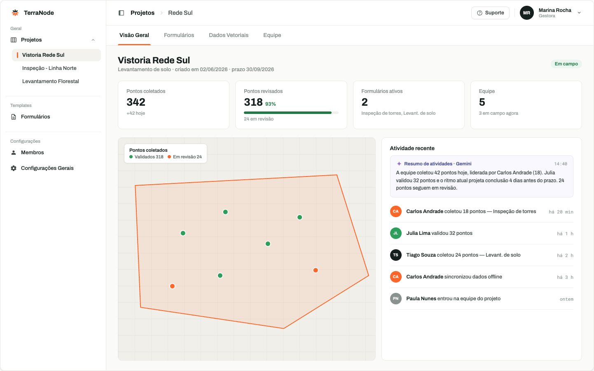
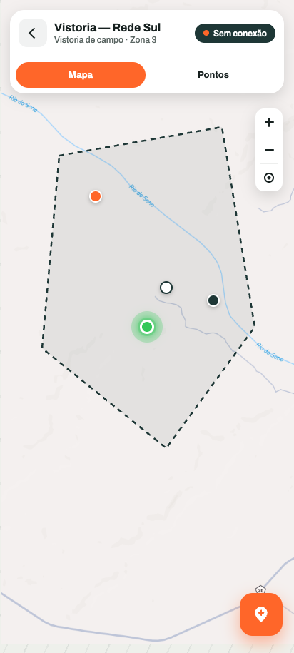
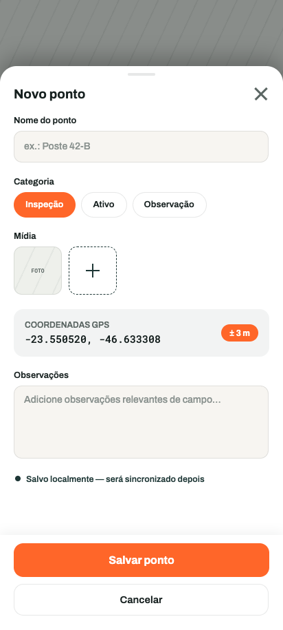
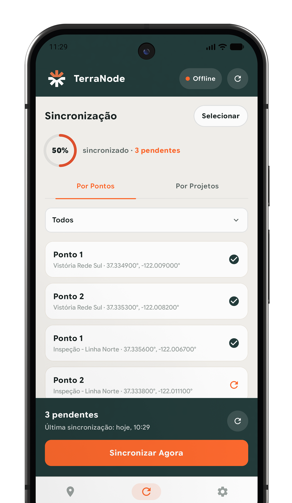
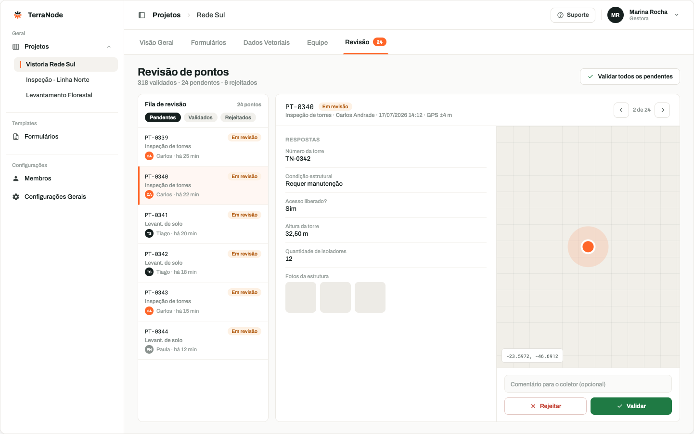

Do campo ao mapa,
sem perder um ponto.
Formulários offline, GPS de precisão e revisão em tempo real. Sua equipe coleta, o TerraNode organiza, valida e sincroniza, mesmo sem sinal.

Feito para quem coleta dados onde o sinal não chega.
Do formulário à validação, um fluxo único: a equipe de campo coleta pelo aplicativo e a revisora acompanha tudo no navegador.

Offline de verdade, sincronização automática
Colete o dia inteiro sem rede. Ao voltar para o sinal, fotos, áudios e geometrias sobem sozinhos, com fila visível e sem duplicar nada.
Pontos, linhas e polígonos
Capture qualquer geometria por GPS ou desenho no mapa, com precisão mínima configurável por campo.
Formulários sob medida
10 tipos de campo, de fotos e áudios a quantitativos e autocomplete, com validação antes de publicar.
Revisão ponto a ponto
Fila de pendentes, validação com um clique e comentários que voltam direto para o coletor em campo.
Equipe por formulário
Atribua cada formulário a coletores específicos e acompanhe a produção de cada pessoa em tempo real.
Três passos entre o planejamento e o dado validado.
Monte o formulário
Arraste os campos, defina regras e atribua cada formulário aos coletores certos, tudo no navegador.
Colete em campo
A equipe registra fotos, áudios e geometrias pelo aplicativo. Com ou sem sinal, o dado nunca se perde.
Revise e valide
Cada ponto passa pela fila de revisão: valide, rejeite com comentário e exporte só o dado confiável.
Antes, cada campanha de campo voltava com planilhas incompletas e fotos soltas no WhatsApp. Com o TerraNode, o dado chega validado. Cortamos duas semanas do fechamento de cada projeto.
Um app para o campo. Um painel para o escritório.
O mesmo projeto, visto de dois lugares: quem coleta usa o aplicativo offline-first; quem gerencia acompanha, revisa e valida pelo navegador.





Conecte seu receptor GNSS por Bluetooth ou USB.
Quando o GPS do celular não basta, pareie um receptor externo e o TerraNode passa a gravar cada ponto com a precisão do instrumento, sem mudar nada no fluxo de coleta.
Seja avisado no lançamento ou use antes de todo mundo.
Estamos finalizando o TerraNode com equipes de campo reais. Deixe seu e-mail e escolha como quer participar: só receber o aviso do lançamento, ou entrar no grupo de early testers e influenciar o produto.